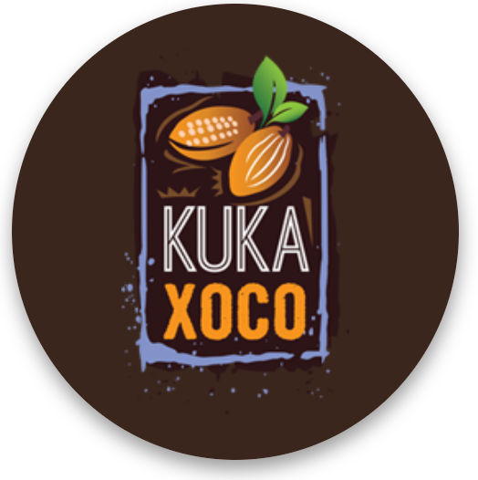
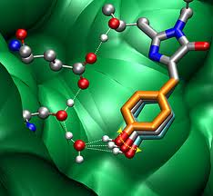
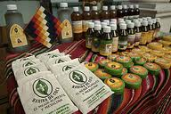

Institute Members and their Research Efforts
The IICC is currently seeking funding for the following projects:
- ICESI - experimental farm for coca leaf varieties, Valle de Cauca
- ICESI - experimental farm for coca leaf varieties, Nariño
- ICESI - coca food/beverage product engineering
- ICESI - pilot plant for alkaloid-free coca leaf extracts
- ICESI - pilot plant for coca leaf beverages
- KukaXoco - new legal tactics for industrializing the coca leaf
- KukaXoco - seeking GRAS status for the full coca leaf

KukaXoco
Making Cola Sodas and Chocolate Taste Better with Less Sugar - KukaXoco is a startup based in Colombia, Peru, Bolivia, Costa Rica and California/Oregon that made the initial discoveries of industrial uses of coca leaf extract in foods and beverages. These discoveries are the foundation for an entirely new, legal, industry for coca leaf products. This Web site was originally developed by the founder of KukaXoco, Greg Aharonian, and now has been transferred to the Institutes.
MoreSections
Coca Nutraceuticals - News Products
A database of news on coca and nutraceuticals, and a database on coca organizations/products/books from around the world.

Nutraceuticals from the Andes and Amazonia
Quinoa, coca leaf - and much more - the Andes and Amazonian are an incredible source of renewable plants that can serve as nutraceuticals - foods that are also medicinal.

Sugar - World's 2nd-most Destructive Drug
Explore the hypocrisy of a global ban on coca leaf products, which are neither addictive nor destructive of health, as opposed to non-banned sugar and nicotine, the world's two most addictive and destructive drugs.
Coca - a breakthrough in health and diet
Coca's unscientific association with cocaine has deprived the world's people of many yet-to-be invented medical and dietary uses of the non-addictive, nutritive extracts of the coca leaf.
The Coca Leaf: Science, Patents, Industrialization
An introduction to the science and patenting of coca and other nutraceuticals, and the many opportunities for inventing with these products.
Título
Descripción